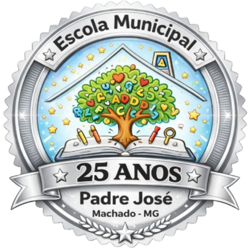

<footer class="footer">
    <div class="container footer-shell">
        <div class="footer-top row g-4">
            <div class="col-lg-5">
                <div class="footer-brand">
                    
                    <div>
                        <p class="footer-tag">Educação com acolhimento, respeito e propósito.</p>
                        <h3>Escola Municipal Padre José de Souza Ribeiro</h3>
                        <p class="footer-quote">"Educar é semear com sabedoria e colher com paciência."</p>
                        <span class="footer-author">Augusto Cury</span>
                    </div>
                </div>
            </div>

            <div class="col-sm-6 col-lg-2">
                <h4>Navegação</h4>
                <ul class="list-unstyled footer-links">
                    <li><a href="index.html">Início</a></li>
                    <li><a href="quemsomos.html">Quem somos</a></li>
                    <li><a href="galeria.html">Galeria</a></li>
                    <li><a href="projetos.html">Projetos</a></li>
                    <li><a href="contato.html">Contato</a></li>
                </ul>
            </div>

            <div class="col-sm-6 col-lg-2">
                <h4>Redes sociais</h4>
                <ul class="list-unstyled footer-links">
                    <li><a href="https://www.facebook.com/escolamunicipal.padrejose" target="_blank" rel="noreferrer">Facebook</a></li>
                    <li><a href="https://www.instagram.com/escolamunicipal.padrejose/" target="_blank" rel="noreferrer">Instagram</a></li>
                </ul>
            </div>

            <div class="col-lg-3">
                <h4>Contato</h4>
                <ul class="list-unstyled footer-links contact-list">
                    <li><a href="tel:3532956711">(35) 3295-6711</a></li>
                    <li><a href="mailto:padresouza123@gmail.com.br">padresouza123@gmail.com.br</a></li>
                    <li><a href="https://maps.app.goo.gl/fFY4TfbEe2ytAVht9" target="_blank" rel="noreferrer">Av. Francisco Vieira Guerra, 260, Jardim das Oliveiras, Machado - MG</a></li>
                </ul>
            </div>
        </div>

        <div class="divider"></div>

        <div class="footer-bottom">
            <p>Copyright © 2026 - Escola Municipal Padre José de Souza Ribeiro - Desenvolvido por  
            <a class="fw-bold text-decoration-none" style="color: #138fb4;" href="https://github.com/kkjaokk" target="_blank"><i style="padding: 0;" class="bi bi-github"></i> João Henrique </a>& 
            <a class="fw-bold text-decoration-none" style="color: #138fb4;" href="https://github.com/LuisGustavo52" target="_blank"><i style="padding: 0;" class="bi bi-github"></i> Luís Gustavo </a></p>
        </div>
    </div>
</footer>
